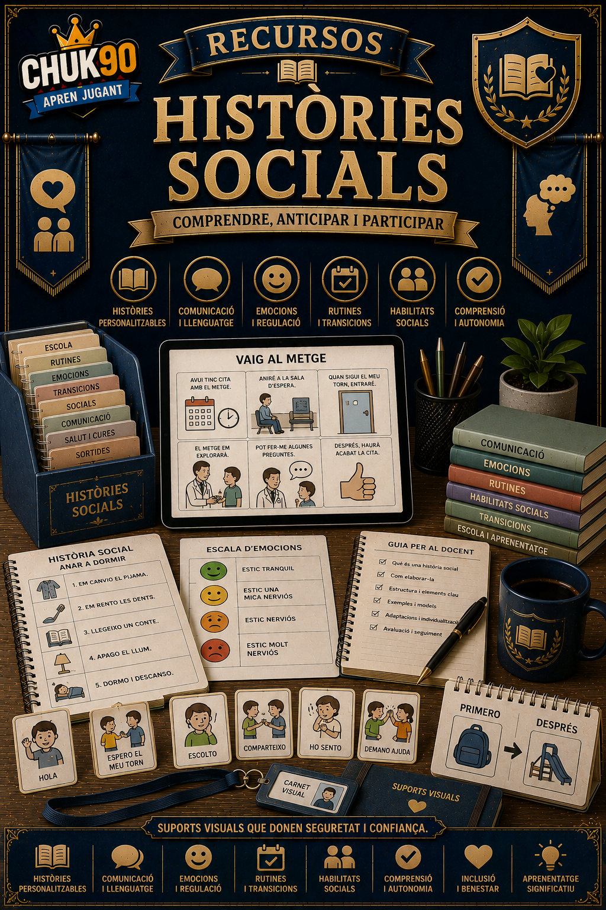

Recursos
Històries Socials
Comprendre, anticipar i participar
Aquesta pàgina queda preparada per afegir ací l’app, material o recurs corresponent.
Tornar a Recursos
Recursos
Comprendre, anticipar i participar
Aquesta pàgina queda preparada per afegir ací l’app, material o recurs corresponent.
Tornar a Recursos